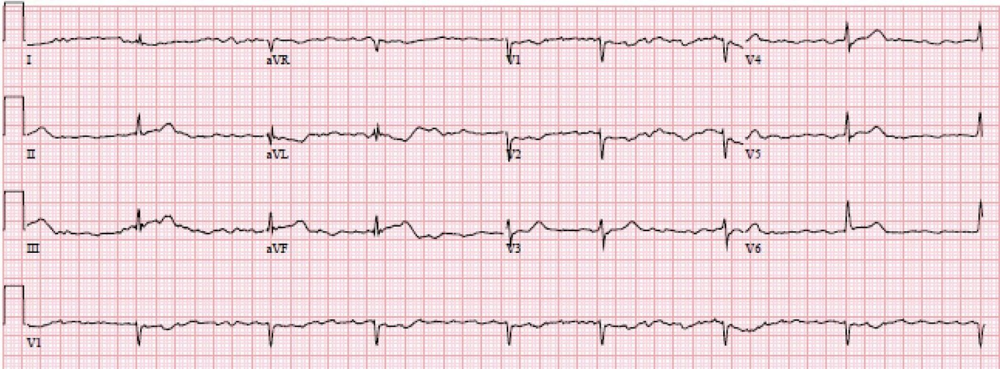
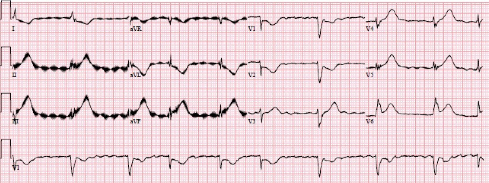
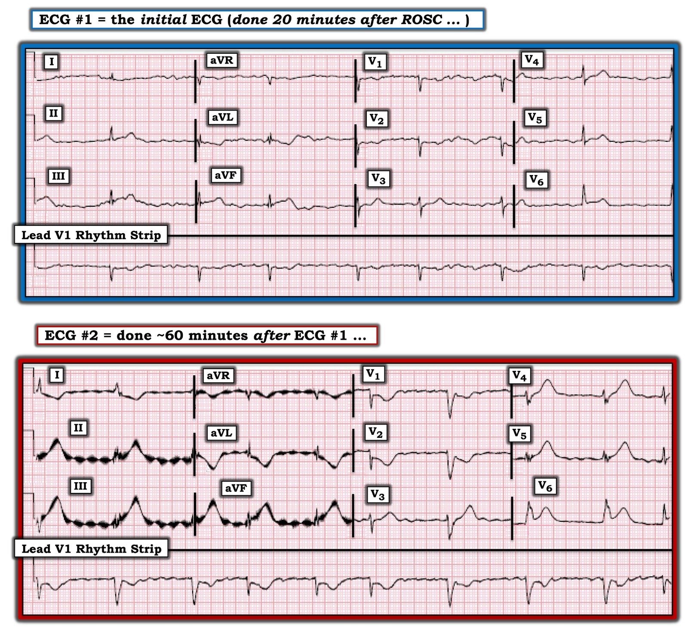
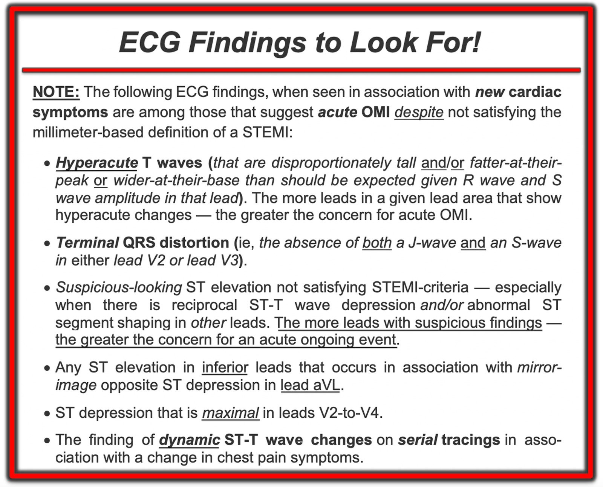

17/11/2020 — Một phụ nữ 60 mấy tuổi ngừng tim do rung thất (VFib) và không có STEMI trên điện tâm đồ sau ROSC
Bản dịch tiếng Việt của bài "A woman in her 60s with VFib arrest and no STEMI on her post-ROSC ECG." – Dr. Smith’s ECG Blog. Giữ nguyên toàn bộ 6 hình ảnh và 2 video của bản gốc.
Ca bệnh do Sonika Raj MD gửi và viết, Meyers và Smith biên tập
Ca này cho thấy thử nghiệm COACT có sai sót chết người và nguy hiểm như thế nào. (xem tài liệu tham khảo bên dưới)
Một phụ nữ 60 mấy tuổi, tiền sử bóc tách động mạch chủ type A đã sửa chữa nội mạch và bệnh thận giai đoạn cuối (ESRD) đang lọc màng bụng, đến khoa cấp cứu (ED) trong tình trạng ngừng tim. Bà được phát hiện bất tỉnh trong xe hơi của mình, chiếc xe đã lao ra khỏi đường ngay bên ngoài cửa bệnh viện. Một người qua đường đã ép tim tại hiện trường và gọi đội cấp cứu ngoài viện (EMS), đội này đưa bệnh nhân vào trong. Nhịp đầu tiên ghi nhận được là rung thất (ventricular fibrillation). Bệnh nhân được khử rung một lần và đạt tái lập tuần hoàn tự nhiên (ROSC). Khoảng 20 phút sau ROSC, điện tâm đồ của bà được trình bày dưới đây. Lúc đó không có điện tâm đồ cũ nào.


Chất lượng bản ghi kém với trôi đường nền, và nên cố gắng hết sức để ghi lại ngay với chất lượng tốt hơn nếu có thể. Tuy nhiên, tôi cho rằng ở đây có những dấu hiệu quan trọng, rất đáng lo ngại cho OMI cấp liên quan đến thành dưới, thành sau và thành bên. Mặc dù có trôi đường nền, sóng T ở chuyển đạo III và aVF trông có thể tích hơi lớn, kèm sóng T tối cấp âm soi gương (reciprocal) ở aVL. Chuyển đạo V2 và V3 gần như chắc chắn có ST chênh xuống (STD) (nếu đường nền ổn định hơn một chút thì tôi có thể nói là chắc chắn). Chuyển đạo V6 dường như có ST chênh lên (STE) nhẹ. Gộp lại, mỗi dấu hiệu này đều củng cố cho các dấu hiệu còn lại, và khả năng chúng chỉ do trôi đường nền là thấp.
Một lần nữa, nên cố gắng hết sức để có ngay một đường nền thật rõ ràng, tuy nhiên tất cả chúng ta đều biết rằng, trong thực tế, đôi khi không thể có được một điện tâm đồ chất lượng hoàn hảo.
Điện tâm đồ không đạt tiêu chuẩn STEMI, nhưng, đặc biệt trong bối cảnh ngừng tim do rung thất, có giá trị chẩn đoán OMI dưới-sau-bên. Phòng thông tim (cath lab) đã được kích hoạt. Bệnh nhân được truyền dịch nhanh (bolus) vì nghi nhồi máu thất phải kèm hạ huyết áp, và dùng thuốc vận mạch để duy trì huyết áp động mạch trung bình (MAP) mục tiêu.
Bác sĩ tim mạch can thiệp đã đánh giá điện tâm đồ nhưng họ ngần ngại đưa bệnh nhân vào phòng thông tim vì điện tâm đồ không đạt tiêu chuẩn STEMI.
Khoảng 60 phút sau, một điện tâm đồ khác được ghi:


Chuyển đạo II, III và aVF có những sóng T tối cấp thuộc loại rõ nhất mà tôi từng thấy, chuyển đạo V4-V6 cũng vậy. Có nhiễu điện và tôi không thể xác định chính xác các điểm J, nhưng nhiều khả năng điện tâm đồ này cũng đạt tiêu chuẩn STEMI; tuy vậy điều đó không quan trọng so với việc các sóng T tối cấp có giá trị chẩn đoán rõ ràng đến mức nào. Đây là OMI dưới-sau-bên. Dĩ nhiên, hãy chú ý ST chênh xuống tối đa ở V1-V2, biểu thị tổn thương thành sau.
Ngay sau đó, bệnh nhân được phát hiện tắc 100% động mạch mũ trái (LCx), được điều trị bằng lấy huyết khối và can thiệp mạch vành qua da (PCI).
Đây là hình chụp mạch vành trước can thiệp của bà:
Đây là hình chụp mạch vành sau can thiệp của bà:
Bà được nhập đơn vị chăm sóc mạch vành (CCU) và được hạ thân nhiệt chỉ huy vì không làm theo lệnh sau khi đạt ROSC.
Troponin I độ nhạy cao ban đầu (lấy trong lúc ngừng tim) có kết quả 27 ng/L (giới hạn phát hiện 5 ng/L, giới hạn trên tham chiếu (URL) bách phân vị 99% là 15 ng/L ở nữ, 23 ng/L ở nam)
Troponin I lần thứ hai được lấy vài giờ sau và có kết quả trên 50.000 ng/L. Lúc đó chúng tôi cũng có CK-MB trên 600 với CK toàn phần 3506.
Bệnh nhân sống sót nhưng không có dữ liệu theo dõi dài hạn.
Bàn luận về COACT, bởi Smith:
Thử nghiệm COACT có sai sót chết người, và giờ đây đã khiến nhiều bác sĩ tim mạch tin rằng nếu không có tiêu chuẩn STEMI thì bệnh nhân không cần vào phòng thông tim.
Lemkes JS, Janssens GN, van der Hoeven NW, và cs. Coronary Angiography after Cardiac Arrest without ST-Segment Elevation. N Engl J Med [Internet] 2019; Truy cập tại: http://dx.doi.org/10.1056/NEJMoa1816897
Có nên đưa mọi bệnh nhân ngừng tim với nhịp sốc được đi chụp mạch vành bất kể có STEMI hay không?
Từ lâu đã có tranh cãi về việc có nên đưa bệnh nhân có nhịp sốc được mà không có ST chênh lên vào phòng thông tim hay không, và một thử nghiệm ngẫu nhiên gần đây cho thấy không có lợi ích: Coronary Angiography after Cardiac Arrest without ST-Segment Elevation (COACT). Nghiên cứu này có một sai sót chết người: họ không theo dõi tất cả những “bệnh nhân không STEMI” KHÔNG được đưa vào nghiên cứu mà thay vào đó được chuyển đi chụp mạch vành ngay. Nghiên cứu được tiến hành ở châu Âu, nơi các hướng dẫn khuyến cáo đưa mọi trường hợp ngừng tim có nhịp sốc được vào phòng thông tim cấp cứu. Vì vậy, rất có thể các bác sĩ đã rất ngần ngại đưa vào nghiên cứu những bệnh nhân mà họ nghi ngờ có nhồi máu cơ tim do tắc (OMI), ngay cả khi những bệnh nhân này không có STEMI. Các bác sĩ này không muốn một bệnh nhân có OMI không phải STEMI bị phân ngẫu nhiên vào nhóm không chụp mạch vành. Nghi ngờ mạnh mẽ này được củng cố bởi chính dữ liệu của họ: chỉ 22 trong số 437 (5,0%) bệnh nhân trong nghiên cứu này có OMI.
Bao nhiêu phần trăm trường hợp ngừng tim có nhịp sốc được mà không có STE có OMI?
Sổ bộ lớn này đăng trên Circulation năm 2010 báo cáo rằng có ít nhất 1 tổn thương động mạch vành đáng kể ở 128 (96%) trong số 134 bệnh nhân có ST chênh lên trên điện tâm đồ ghi sau khi tái lập tuần hoàn tự nhiên, và ở 176 (58%) trong số 301 bệnh nhân không có ST chênh lên.
5% so với 58%!! Rõ ràng đã có sai lệch tuyển chọn đáng kể trong COACT.
Chúng tôi ở Hennepin gần đây đã công bố nghiên cứu này
Sharma và cs. (cùng với Smith và những người khác) nhận thấy rằng ở những bệnh nhân ngừng tim có nhịp sốc được và có OMI, điện tâm đồ ban đầu và các điện tâm đồ tiếp theo trước chụp mạch vành chỉ có độ nhạy 75% đối với OMI, với độ đặc hiệu tương tự.
Sharma A, Miranda DF, Rodin H, Bart BA, Smith SW, Shroff GR. Do not disregard the initial 12 lead ECG after out-of-hospital cardiac arrest: It predicts angiographic culprit despite metabolic abnormalities. Resuscitation Plus [Internet] 2020;4:100032. Truy cập tại: http://www.sciencedirect.com/science/article/pii/S2666520420300321
Những điểm cần học:
Các điện tâm đồ liên tiếp có tầm quan trọng hàng đầu.
Lợi ích của tái tưới máu cấp cứu lớn nhất chính là khi troponin còn thấp nhất. Troponin không có vai trò gì trong quyết định tái tưới máu cấp cứu khi tình trạng này có thể chẩn đoán được bằng điện tâm đồ như trong ca này.
Ngừng tim do rung thất cần khiến ta cân nhắc thông tim. Ca này là một ví dụ trong đó điện tâm đồ sau ROSC không cho thấy STEMI nhưng dù vậy vẫn chỉ điểm OMI. Đây chính là những bệnh nhân sau ngừng tim chắc chắn được hưởng lợi từ thông tim cấp cứu.
Chuyển đạo aVL hữu ích khi đánh giá thay đổi soi gương trong bối cảnh nghi thiếu máu cục bộ ở các chuyển đạo thành dưới.

===================================
BÌNH LUẬN CỦA TÔI, bởi KEN GRAUER, MD (17/11/2020):
===================================
Tôi biết đến các khái niệm độ biến thiên giữa và trong cùng người đọc trong đọc điện tâm đồ cách đây hơn 30 năm, trong thời gian tôi tham gia nghiên cứu ưu và nhược điểm của các chương trình đọc điện tâm đồ bằng máy tính (Grauer KG và cs.: J Fam Pract 24:39-43, 1987; Grauer KG, Marriott HJL, và cs.: J Am Bd Fam Pract 2:17-24, 1989 — cùng nhiều bài khác). Hiểu rõ các khái niệm này là thiết yếu để đọc điện tâm đồ tối ưu trong bệnh mạch vành cấp.
- Đọc điện tâm đồ còn xa mới là một nghệ thuật hoàn hảo. Thường không có “tiêu chuẩn vàng” nào để “chứng minh” cách đọc nào là đúng (và thường có thể có nhiều hơn một cách đọc “đúng”). Tôi đã thấy những ước tính lên tới 30-40% về độ biến thiên giữa các người đọc trong số các người đọc điện tâm đồ chuyên gia. Điều này có nghĩa là NẾU bạn đưa cùng một bản ghi cho một loạt chuyên gia — có thể có lên tới 30-40% khác biệt trong cách đọc các thông số điện tâm đồ khác nhau (nhịp, rối loạn dẫn truyền, thay đổi sóng ST-T, v.v.).
- Cũng có độ biến thiên trong cùng người đọc ~10-20% giữa các chuyên gia đọc điện tâm đồ. Điều này có nghĩa là NẾU bạn đưa cùng một bản ghi cho cùng một chuyên gia vào 2 dịp khác nhau (chẳng hạn, cách nhau vài tuần đến một hai tháng) mà không cho chuyên gia đó biết họ đã đọc bản ghi ấy thế nào lần đầu — thì sẽ có lên tới 10-20% khác biệt trong cách đọc các dấu hiệu ở lần thứ 2, so với những gì chuyên gia đó nói ở lần đánh giá ban đầu.
- Cần lưu ý: Độ biến thiên giữa và trong cùng người đọc vẫn tồn tại — ngay cả khi những người đọc đồng ý dùng các tiêu chuẩn giống hệt nhau. Độ biến thiên có thể ít hơn nếu các bác sĩ được đào tạo chung — nhưng ngay cả trong hoàn cảnh tốt nhất, đọc điện tâm đồ vẫn là một khoa học và một “nghệ thuật”, với độ lặp lại dưới 100%.
- “Tin Vui” — là mặc dù có thực tế khiêm tốn nêu trên về độ biến thiên giữa và trong cùng người đọc — việc đạt được trình độ chuyên môn trong đọc lâm sàng sẽ cho phép các bác sĩ giàu kinh nghiệm, khi được đưa cùng một điện tâm đồ kèm bệnh sử đầy đủ, đi đến một nhận định tổng thể và cách xử trí tương tự nhau.
Áp dụng điều trên vào ca hôm nay:
Dr. Raj, Dr. Meyers, Dr. Smith và tôi đều đánh giá độc lập điện tâm đồ #1 (mà tôi đã đưa lại cho rõ, cùng với bản ghi theo dõi trong Hình 1).
- Tất cả chúng tôi đều được cho biết bệnh nhân là một phụ nữ 60 mấy tuổi có các bệnh lý nền, đến khoa cấp cứu (ED) trong tình trạng ngừng tim. Khoảng 20 phút sau ROSC — điện tâm đồ #1 được ghi.
- Tất cả chúng tôi đều độc lập cho rằng điện tâm đồ #1 chưa tối ưu về kỹ thuật — với trôi đường nền và nhiễu đáng kể. Lý tưởng nhất — tất cả chúng tôi đều muốn có một bản ghi theo dõi càng sớm càng tốt — nhưng điều này đã không được thực hiện.
- Dù vậy — Tất cả chúng tôi đều đi đến cùng một kết luận về cách đọc điện tâm đồ #1: Trong bối cảnh hồi sức sau ngừng tim do rung thất (VFib), điện tâm đồ #1 gợi ý mạnh mẽ OMI cấp. Dù vậy, bất kể điện tâm đồ #1 có đạt tiêu chuẩn STEMI tính theo milimét hay không — sự kết hợp các dấu hiệu điện tâm đồ bất thường thấy trên bản ghi này là quá đủ để chỉ định thông tim ngay lập tức.
Sự đồng thuận về tiêu chuẩn STEMI:
Có sự đồng thuận chung giữa các bác sĩ giàu kinh nghiệm về việc một điện tâm đồ nhất định có thỏa tiêu chuẩn tính theo milimét cho STEMI cấp hay không. Do đó — hiện tượng biến thiên giữa và trong cùng người đọc trong đọc điện tâm đồ hiếm khi đóng vai trò.
- Đáng tiếc — độ biến thiên giữa các người đọc trong việc nhận định có OMI hay không (khi không thỏa tiêu chuẩn STEMI tính theo milimét) là rất lớn. Thiếu sót này trong cách tiếp cận lâm sàng của chúng ta là cơ sở cho phần lớn các nghiên cứu do Dr. Smith và Dr. Meyers thực hiện.
- Dr. Meyers đã tóm tắt các kết luận của nghiên cứu này trong bài nói dài 17 phút có thể xem tại bài ngày 3 tháng Chín năm 2020 của chúng tôi — được củng cố bởi y văn trong bài ngày 31 tháng Bảy năm 2020 — các dấu hiệu điện tâm đồ trong đó tôi tóm tắt ở Bảng dưới đây trong Hình 2, lấy từ Bình luận của tôi ở cuối bài ngày 13 tháng Chín năm 2020 của chúng tôi.


Hình 1: 2 điện tâm đồ đã trình bày ở trên trong ca hôm nay (Xem phần bài viết).
SUY NGHĨ CỦA TÔI về điện tâm đồ #1: Như đã nêu ở trên — có trôi đường nền + nhiễu đáng kể trong điện tâm đồ #1. Tuy vậy — vẫn có thể đọc được bản ghi này, vốn được ghi ~20 phút sau ROSC sau ngừng tim do rung thất.
- Phức bộ QRS trong điện tâm đồ #1 hẹp. Nhịp không đều hoàn toàn với tần số khoảng 40 mấy. Đây là AFib chậm không tương xứng.
- Có điện thế thấp. QTc có vẻ không quá dài. Trục mặt phẳng trán khoảng +50 độ. Không có lớn buồng tim.
Về Thay đổi sóng Q–R–S–T:
- Dường như có sóng Q nhỏ ở chuyển đạo III và aVF.
- Tăng tiến sóng R bình thường, với vùng chuyển tiếp (nơi sóng R trở nên cao hơn độ sâu của sóng S) xảy ra bình thường ở đây, giữa chuyển đạo V3 và V4.
- Đáng tiếc, việc đánh giá thay đổi sóng ST-T khó khăn, vì mỗi chuyển đạo chỉ có không quá 1 hoặc 2 phức bộ QRST do tần số quá chậm. Dù vậy — 1 phức bộ ta thấy ở chuyển đạo III và 2 phức bộ ta thấy ở chuyển đạo aVF đều gợi ý ST chênh lên kín đáo nhưng có thật. Chúng ta biết điều này nhiều khả năng là có thật — vì cả hai sóng ST-T ta thấy ở chuyển đạo aVL đều có ST chênh xuống soi gương, trông như hình soi gương đối nghịch với những thay đổi ta thấy ở chuyển đạo III và aVF.
- Mỗi sóng ST-T ta thấy ở chuyển đạo V2 và V3 dường như có đoạn ST dẹt kèm chênh xuống nhẹ. Như vậy, ST chênh xuống tối đa ở chuyển đạo V2 và V3.
- Ta chỉ thấy một sóng ST-T ở các chuyển đạo V4, V5 và V6 ghi đồng thời — nhưng đoạn sóng ST-T này ở mỗi chuyển đạo trong 3 chuyển đạo này dường như có ST chênh lên, với sóng T ở chuyển đạo V4 có lẽ là tối cấp (tức là cao hơn và to hơn mức đáng có so với chiều cao sóng R ở chuyển đạo này).
Điện tâm đồ #1: Tổng hợp lại tất cả — Các dấu hiệu điện tâm đồ đáng ngờ được thấy ở không dưới 8/12 chuyển đạo trong điện tâm đồ #1. Dù có thể chất lượng kỹ thuật chưa tối ưu của bản ghi này giải thích được tín hiệu sai ở một vài chuyển đạo — tôi thấy khó mà bỏ qua các gợi ý từ 8/12 chuyển đạo ở bệnh nhân vừa được hồi sức sau ngừng tim do rung thất này. Gộp lại — các dấu hiệu trong điện tâm đồ #1 đang cho chúng ta biết vì sao bệnh nhân này bị rung thất.
- Nhìn vào các mục tôi đã liệt kê trong Hình 2 — cách đọc điện tâm đồ #1 của chúng ta nên gợi ý OMI cho đến khi chứng minh được điều ngược lại, vì các gạch đầu dòng thứ 1, thứ 3, thứ 4 và thứ 5 trong Bảng ở Hình 2 này đều được thỏa.
SUY NGHĨ CỦA TÔI về điện tâm đồ #2: Như mọi khi — so sánh các bản ghi liên tiếp mang lại nhiều hiểu biết sâu sắc, đặc biệt khi đã có diễn tiến lâm sàng. Chúng ta có thể học được rất nhiều bằng cách quay lại cách đọc bản ghi ban đầu, để xem các dấu hiệu bất thường sớm trông như thế nào trong điện tâm đồ #1, và chúng đã trở thành gì trong điện tâm đồ #2!
- Nhịp trong điện tâm đồ #2 vẫn là AFib chậm.
- Như Dr. Meyers đã nêu, dù có nhiễu điện ở các chuyển đạo chi — có các sóng ST-T tối cấp rất rõ rệt ở mỗi chuyển đạo thành dưới — kèm ST chênh xuống soi gương rõ rệt không kém ở chuyển đạo I và aVL.
- Ở các chuyển đạo trước tim — sóng T cao và to không tương xứng (đáy rộng) được thấy ở chuyển đạo V3 đến V6 ( = sóng T tối cấp) — kèm ST chênh lên ở các chuyển đạo này.
- Giờ đây thấy rõ sóng ST-T chênh xuống ở chuyển đạo V1 và V2.
- Tổng hợp lại tất cả: Như Dr. Meyers đã nêu — hình ảnh của điện tâm đồ #2 xác nhận OMI dưới-sau-bên cấp.
- Nhìn lại — chúng ta có thể thấy “những khởi đầu” của các sóng ST-T tối cấp ở các chuyển đạo thành dưới và chuyển đạo trước tim phía bên của điện tâm đồ #1.


Hình 2: Các dấu hiệu điện tâm đồ cần tìm khi bệnh nhân có triệu chứng tim mới khởi phát không biểu hiện ST chênh lên đạt tiêu chuẩn STEMI trên điện tâm đồ (Xem phần bài viết).
ĐIỂM CẦN HỌC Cuối cùng: Mục đích của chúng tôi khi xây dựng các tiêu chuẩn dự đoán OMI khi không thỏa tiêu chuẩn STEMI dựa trên milimét — là hy vọng giảm thiểu khả năng biến thiên giữa và trong cùng người đọc khi đọc các bản ghi trong giai đoạn cấp.
- Nếu bác sĩ tim mạch can thiệp trong ca hôm nay đã cân nhắc các tiêu chuẩn tôi liệt kê trong Hình 2 — quyết định kích hoạt phòng thông tim đã có thể được thực hiện sớm hơn nhiều (điều này sẽ làm tăng cơ hội đạt được kết cục dài hạn tối ưu).